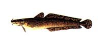
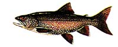
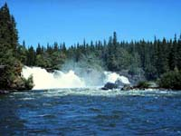
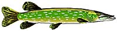

 Freshwater lakes in Saskatchewan are home to the many varieties of sport fish. But how do you know when the best times are to catch the 'big one'? Knowing something about the feeding habits of fish species and the lake or waterbody itself, will help. For example, deep, cold lakes are home to bottom-dwelling fish such as burbot.  Lake trout is another species which occupies moderately deep water and moves to shallower water with nightfall to feed. Fishes that live close to the surface of freshwater have the best access to light and food, like perch, walleye and pike.  Certain times of the day are more popular for feeding than other times. Smaller fish, occupying shallow water, may feed during daytime when the organisms that make-up their diet are most active. The small fish school and search for food, very alert to any approaching predators. Midday is perhaps the poorest time to angle, since many larger fish avoid the sunlight and moving waters, however, most fish will feed at any time if prey is available. Prey, to a fish, could include the lure on the end of your line, so knowledge of the diet of the fish you are after would be a definite asset.  By dusk, the smaller fish may be less active. Schooling functions in part, as a means of camouflage and protection from predators. As light decreases, these schools break down. Predator fish become more active. The window of opportunity to catch a prized walleye or pike lasts as long as dusk is long. As night sets in, even predator fish seek a resting place.
|